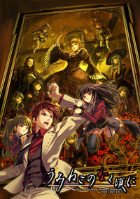
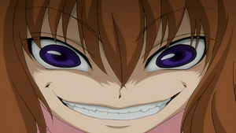
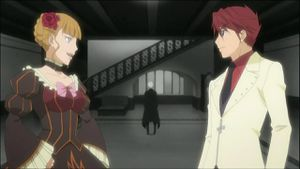
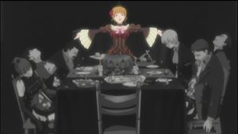
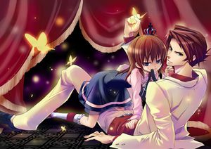
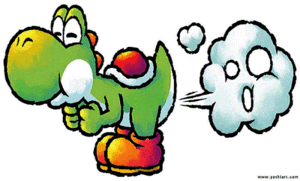

Umineko no Naku Koro ni
 De: La Frikipedia, la enciclopedia extremadamente seria.
De: La Frikipedia, la enciclopedia extremadamente seria.
| De la serie anime para todos:
|
| Umineko no Naku Koro ni
|
| 
|
| Battler después de probar LSD
|
|
| Género:
|
Sangre, sexo y drogas. (Y SI, hay Rock 'n' Roll en el ending)
|
| Episodios:
|
26 y creo que harán una segunda temporada
|
| Autor del manga:
|
Ni idea ya que todo salio de unas Eroge, de esos que te fumas Novelas viauales
|
| Publicación:
|
Junio de 1983
|
| Publicado en:
|
En la misma que la de Pandora Hearts
|
| Director del anime:
|
Rika y Satoko FABerkastel y Lambdadelta
|
| Transmitido en:
|
en Japón, Inglaterra y la tierra dorada (un barrio de yonkis)
|
| Ovas:
|
4 pero de chorra y cortas
|
| Películas:
|
Creo que tiene una Live Action.
|
| Notas
|
uuaaaaaa *Hitler siendo redeado por mariposas doradas (¡que bien!)*
|
La masnsión si existe. ¿Te quedarías ahi por una noche?
«La vida es como una caja de tetas»
~ Batler Ushiromiya sobre... la vida
«Uuuu, uuu uu uuuuuu. Uu?»
~ Maria Ushiromiya sobre... ¿la vida?
«Soy un mueble...»
~ Kanon sobre si mismo
«Greorge no tiene razones para querer a Shanon»
~ Eva Ushiromiya sobre la relación de su hijo con la criada
«Tengo dos muy buenas»
~ George Ushiromiya babeandorespondiendo al comentario anterior
«Muy recomendable, sobre todo la parte en que los hobbits siguen al conejo blanco»
~ George bush sobre su incapacidad mental la serie
«Le Doy vuelta al tablero!»
~ Battler Sobre su madurez frente a la derrota
«Asi no acabaremos nunca la partida»
~ Beatriche cansada de la aficion de Batler de darle la vuelta al tablero (¡que boca abajo las piezas se caen al suelo ¡Logica aplastante, Batler!)
Umineko no naku koro ni (Cuando una gaviota viola a tu madre) es una copia de Higurashi no naku koro ni (Ese titulo, argh!), ya que es del mismo creador, pero con más sangre, mas gore y mas adulta. O sea, mejor. El titulo significa “cuando las gaviotas cagan, si hasta en la frikipedia hay plagio del chiste lloran” lo cual es curioso ya que pocas gaviotas aparecen en la serie (es decido que estuvieron trabajando en la peli del cuervo que mato a tu padre. (Se especula que aparecerán al final con un ejército de aves para dominar el mundo, pero eso queda pa la segunda temporada).
Historia
 Nótese la ternura, felicidad y lo moe que es Maria.
Trama
Trata de la paja mental de Ange Ushiromiya, el único personaje real de la serie. Ange fue una niña maltratada y abandonada debido a su excesiva ninfomanía y abuso de alucinójenos. De modo que cuando se encontró toda sola en un orfanato, se empezó a montar la película de que toda su familia había muerto en una isla desierta de modo misterioso (al más puro estilo Agatha Christie mezclada con Evil Dead y espolvoreada con pr0n. Una mezcla cojonuda). Cada vez que cuenta la historia, la va cambiando, haciéndola más sangrienta, incluso añadiendo personajes nuevos para darle un toque a lo telenovela. En todas ellas, su hermano intentará negar a lo que haga Beatriz (aunque le acaba poniendo cachondo todas las veces). En todas ellas, además, la peña tiene que ir muriendo en un número y ocasión especifica según un garabato que alguien escribió bajo un retrato de Beatriz desnuda, llamado “Epitafio de la bruja”. La verdad es que se flipan bastante, como que la vida es un puto tablero de ajedrez al más puro plagio de Kuroshitsuji.
Sagas
Primera Saga
Aquí todo es sencillo. Al principio desaparecen los adultos y algunos criados dejando a George compuesto y sin novia; y a Natsuhi y Eva haciéndose buenas amigas. Según van muriendo se van creyendo que es cosa de magia menos Batler que al final está solo y ni sabe como (Eso que fuma es un misterio). Justo ahí conoce a Beatriz y se desafían a ver quién puede más. Como a Bea la llaman la insaciable interminable pues lo tiene algo crudo. Es curioso como a Rosa la matan la primera y Maria no para de darle a la risa malvada desde ese momento, dejándonos entrever su buena relación madre/hija.
Segunda Saga
 "Battle la tiene chiquitita" La cosa se complica con la segunda saga. Aquí a los 6 primeros se los cargan en plan “Seven” de forma tan gore que lo tienen que censurar (Bah, mariquitas), dejándonos a Rosa al mando (Diox nos ampare!!!). Aquí Beatriz aparece desde el principio para tirarseconfundir a Batler. Shanon se vuelve menos dócil con Beatriz (cosa que le pone a la bruja)Y Kanon intenta ser mas Emo aun (y lo consigue). Las 7 guarrasestacas son presentadas aquí para dar mas placeremoción al asunto.
Tercera Saga
En la tercera saga la cosa se lia aun mas con Vigilia ayudando a Batler a negar brujas (aunque ella lo es, ¿Contradiccion? Hum… no estoy seguro, pero no es relevante. No será el primer anime sin sentido con éxito. Véase si no, Evangelion ). Beatriz se aburre y le regala su drogamagia a la mini eva maligna pa que Batler no se enfade con ella y la penetreacepte como rival en el juego. Mini Evatriz se lo pasa en grande jugando con su hermana Rosa y su sobrinita y Bea se hace la buena. Aquí se ve como a los padres de Batler les va el sadojuego duro, pero un exceso de fiestas en la mansión puede con ellos. Parece que Beatriz va a ganar aquí, pero entonces Ange se cansa de no ser la prota de su propia alucinación más que en flashbacks de 0.5 segundos y aparece toda mayor para ayudar a su querido hermano y sacarlo de su colocón (¿y quien la saca a ella del suyo?) y ya de paso, pasar tiempo en la cama con él.
Cuarta Saga
En la cuarta saga, Ange ha conseguido dominar el mundo y ya es la prota, hasta que empieza a sangrar cosa mala por el final y le pasa el relevo a su hermano, que acaba atravesando a Beatriz con enormes estacas de verdad para ganarla. Pero Chuck se cansa de Ange la superbruja y le deja sin final, ala. En esta saga se ve aun mas lo incomprendida que es Eva tras el incidente. Porque atención, según Ange, sobrevive (Menuda certeza. Que venga Trolbadelta y lo vea, anda). Tambien vemos mucho las fiestas que se monta Ange con sus muebles (como Bella en esa peli xxx- disnei), especialmente con Sakutaro, aunque a Lucia le gusta monopolizarlo. Su mejor amiga (imaginaria) es Mamona, la ansiosa que todo lo quiere. Resucita a Sakutaro después de que la bruta yandere de Rosa le arranque la cabeza (educativamente delante de María), pero no hay que enfadarse con ella, ya que Maria le da a la drogamagia y se pasa al lado oscuro del loli , demostrándole a su madre cuanto la aprecia.
De momento el anime acaba ahí, con Berkastel y Lambdadelta haciendo buenas migas en la cama. Pero como el autor no quiere que CLAMP se agencie esta serie también, decide hacer mas Pr0njuegos y novelas en los que se introduce el tercer clon de Rika y se entrevé a Batler siendo la bruja interminable, dando a entender un cambio de sexoopinión por parte del Teta. Todo ello le puede llevar a un narcicismo extremo al ponerse tetas y obsesionarse consigo mismo, dejando a Beatriz con unas ganas… interminables.
Quinta Saga
En esta saga, Bernkastel y Lambdadelta deciden jugar en el tablero de Beatriz mientras que Battler observa. Bernkastel decide inventarse un clon de ella misma a la que llama Erika Furudo (Versión no moe Rika Furude de Higurashi no naku koro ni) y se inventa que sea ahora el detective. El juego comienza con Erika mostrando su gran habilidad para socializar con los protagonistas. Durante la noche mueren Krauss, Jessica, George, Rosa, Maria y Genji, Erika se hace la lista e intenta demostrar que Natsuhi es la culpable, además intenta demostrar que Kinzo está muerto sacandose de la manga a Dlanor A. Knox, un mueble que se inventa 10 reglas sobre la marcha para ir negando a las brujas. Battler le demuestra que es posible que Kinzo este vivo tirandose por la ventana (Muy lógico). Natsuhi se esconde en un armario sin motivo aparente y en esa habitación alguien se carga a Hideyoshi, volviendo a ser ella la principal sospechosa. Erika la culpa a ella de todo y explica su teoría inventandose que se quedó toda la noche escuchando a los nietos dormir durante toda la noche. Beatriz se aparece de la nada y se inventa que ella es la culpable pero no lo consigue. Battler llega y se inventa que el ha cometido los asesinatos inventandose una nueva regla para demostrar que Kinzo está muerto en realidad (¿contradicción?). La saga termina con Battler con el título de Maestro del juego y prometiendo enfrentarse a Erika en el siguiente juego.
Sexta Saga
La saga comienza con Ange conociendo a una escritora que se hace llamar Hachijo Tohya que escribe novelas sobre Rokkenjima para putear a Ange. Ange decide leer la nueva novela de Hachijo a cambio de favores sexuales. Esta Hachijo también resulta ser una bruja, una tal Follarine.
En esta saga, Battler se inventa la versión moe de Beatriz, pero esta versión moe no le convence porque follar. Mientras tanto, la Beatriz moe quiere convertirse en la Beatriz anterior para ser aceptada por Battler, y conoce a la versión Troll de Beatriz. Quieren intimar para descubrir lo que les falta a la una y a la otra para ser la Beatriz anterior. Al final, se unen al duelo las Beatriz moe y la Troll, y entre todos se cargan a los sacrificios del primer crepusculo porque le apetece a los demonios: Rosa, Maria, Eva, Kyrie, Natsuhi y Battler. Al descubrir los asesinatos, los supervivientes se encierran por órdenes de Erika en dos habitaciones, y Erika va a comprobar el estado de los muertos, y resultaba que todos estaban vivos antes de la visita de Erika. El único que no pudo comprobar fue a Battler, que seguía vivo. Al final, Battler le ofrece a Erika a cambio de favores sexuales el poder de usar tres sellos, Erika los usa para acorralar a Battler y casarse con él. Mientras tanto, la pelea entre Kanon/Shannon acaba, y Shannon gana, Kanon desaparece, se encuentra a moe Beatriz, y Beatriz le pide ayuda. Kanon rescata a Battler, Beatriz se lleva el mérito y se casa con Battler. Después, Bernkastel se encuentra con Follarine, y Follarine le pide a Bernkastel que le enseñe la verdad sobre el juego, la saga acaba con las dos brujas riéndose, y en el próximo juego, Bernkastel promete revelar todo.
Séptima Saga
Octava Saga
Familia
 Vamos a comer, que se enfria
- Kinzo Ushiromiya: Patriarca de la familia, apodado El Cabrón. Vamos, el típico abuelo drogata y pedofilo. Su gran adicción a las drogas de fabricación casera (a lo que el llama “magia negra”) le llevaron a conocer a Beatriz o Beatriche, como les gusta llamarla a muchos. Gracias a tratos
sucioscon Beatriz, Kinzo amasó una gran fortuna (se ve que las drogas se vendian como churros), pero resulta que se negó a compartir beneficios. Así que ella decidió vengarse matando a toda su familia, cosa que le dio igualle pareció todo un reto.
- Krauss Ushiromiya: Primer hijo de Kinzo, alias el Micro. Está en el primer puesto de heredar la fortuna de Kinzo. Es un inseguro a causa
del tamaño de su pene de ser consciente que sus otros hermanos son mas sexysinteligentes que el. Está en el negocio de la droga tambien, pero aunque planea expanderlo afuera de la isla, no se atreve por sus inseguridades. El más querido por los otros hermanos.
 Despues de esto Batlle tuvo varios cargos de pederastia
- Natsuhi Ushiromiya: Mujer de Krauss, apodada la Guarra por su concuñada Eva, a la que ama con locura. Nacida jesi pero criada en un convento, estaba mas reprimida sexualmente que un mono atado con una cuerda, por lo que en cuanto vio a Krauss por primera vez, le convenció de sacarla de alli con un par de razones. Es muy orgullosa y se enfada si otros se burlan de la falta de
tamañoseguridad de su marido. Le gustaría tener alas bordads en la ropa pero no la dejan por ser jesi. Especialmente su suegro, que la usa con la reconpensa de darle un ala y luego no se la da. (De ahi el apodo de Kinzo). Aparte de su relación amor-odio con Eva, compiten mucho a ver quien es mas snob (aunque como no pueden ganarle a la bruja Beatriz, pues andan las dos frustraas del todo). Suele pagar sus frustraciones con los criados, especialmente con Shanon, ya que al resto se la pica tiene razones mayores que ella. Padece de jaqueca interminable (cortesía de Beatriz)
- Jessica Ushiromiya: Hija de Krauss y Natsuhi. Alias, la Jessi. En cuanto la ves empiezas a plantearte cosas de genetica a ver como sale rubia si sus padres son ambos morenos (luego aparece Berkanstel con su pelo azul y las estacas con su pelo moco y ya uno le puede pegar un tiro a Mendel o a su abuela.) Lo de jesi es heredado(como su madre). Le tiene mucha envidia a Shanon porque tiene
mas tetas novio. Le va el shota y se lamenta porque el emo no le hace caso. Parece muy normalita pero es capaz de pegar hostias como panes con sus tetas nudillos de hierro no jutsu. Siempre esta esperando con poca ropa impaciencia las orgiasreuniones familiares de todos los años. Se supone que es muy tranquila, pero en el colegio se vuelve tsundere (no como su madre, que solo esta desequilibrada). Tiene problemas respiratorios de tanta coca que esnifa.
- Eva Ushiromiya: Primera hija de Kinzo (aunque segunda en la clasificación de heredar la pasta). Alias la perra, apodo cortesia de Natsuhi con la que se lleva tan bien. Odia a todos y los matará con tal de conseguir
la droga su objetivo, sea este la herencia o el mando de la tele. Tiene un mini yo malvado que se cree putabruja. A Kinzo le cae mejor que Krauss(a ese le odia), pero como es capullomachista, pues no le da droga. Ella quiere que su hijo herede el imperio de droga de Kinzo, pero como ella nació despues de Kraus, pues ajo y agua. Desprecia a Natsuhi por ser jessimujer de Krauss y se burla por tener mas alas que ella (se creera que vuela con tantas alas, me pregunto que esnifa). Es mas avariciosa que gilipato y aunque va vestida a lo Chichi de dragon ball, es mas inutil incluso que ella luchando (donde halla una buena Uzi...). Está en contra del romance entre George y Shanon porque un enlace entre personas que se quieren no consigue audiencia. Asi de jodía es. Es la que mas exhibe sonrisa malvada (que no risa malvada) y es adicta a los abanicos.
 No, no es este, pero también te ries con él
- Ide-Yoshi Ushiromiya:
amomarido de Eva. Alias, el Pegao. Conoció a Eva cuando era mas joven y degeneradajodia. A leches la llevó por el malbuen camino de la prostituciónfamilia y las drogasempresas. Es el típico gordo simpatico del que todos se rienque alegra el dia a todos con su colección de buen humor. No os creais lo de gordo buenazo porque en el fondo tambien quiere un pedazo de la pasta heredada, sino, fijense en que se cambió el apellido por el de su esclavaesposa. Krauss le tiene envidia secreta por su gran olfato para los negocios.
- George “Yoryi” Ushiromiya: hijo de Eva e HideYoshi. Alias, El fumao. Su madre quería que su hijo fuese el heredero perfecto del imperio de Kinzo, pero como era un reberde wei de esos en el cole, le educó
fumando coca duramente desde entonces. Por ello tiene siempre esa cara gilipollasseria y es muy atontadomaduro a sus jovenes 23 años (donde esta la regla del anime que los protas “hijos” tienen que tener 15 o asi?). Conoció a la doncella (doncella por sirviente, no por virgen que esta parece muy inocente y luego....) Shanon cuando ella era menor de edad y la violóse enamoró de ella tras un par de polvosa primera vista. Aprendió artes marciales de su madre y le metian palizas, asi que escogió un maestro menos patético y aprendió a dar patada en los cojones , su técnica mortal.
- Rudolf Ushiromiya: segundo hijo de Kinzo y tercero despues de Eva. Alias, El Chulo. De muy joven vio en los negocios
de la prostitución un gran porvenir. Y a los empleados que no trabajaban se los cepillaba el les animaba para ser mas eficientes. Cuando murió su primera esposa se quedó con una que le conocía de siempre, cosa que a su hijo no le hizo gracia porque no quería compartirla con su viejo. Siempre intenta meter mano a su hija pequeña pero esta siempre le rechazaba, prefiriendo a su hermano, por eso Rudolf odiaba a Batler y le echó de casa, hasta que seis años después, le dijo que volviese ya que estaba dispuesto a compartir la mercancía.
- Kyrie Ushiromiya: segunda esposa de Rudolf, Alias Las Razones. Fue el primer amor de Rudolf hasta que este dejó preñada a otra antes, asi que la tuvo que dejar. Cuando la otra palmó por sobredosis, Kyrie volvió con Rudolf por su gran amor, cosa que no gusto a Batler, ya que era su ayudante personal. Le gusta dar la vuelta al tablero de ajedréz para coger las piezas que se caen y utilizarlas para razonar mejor. Al final se revela que ademas de pedófila, drogadicta y ninfomana, era incestuosa, pues se lo montaba con su propio hijo (claro que ahora viene con la excusa de que no lo sabía).
- Batler “Batora” Ushiromiya: hijo de Rudolf y Kyrie (aunque tambien asegura que no lo sabía ), apodado el Teta. El pobre (je) vivio toda su vida rodeado de las señoritas de grandes “argumentos” del negocio de su padre y se obsesionó. Siempre que ve a una chica se queda apanao con las razones que exiben. Es muy convincente en su afan de tocateta, pero solo se deja Shanon (sin pagar) por ser muy obediente y Maria (cuando le crezcan). Heredó de Kyrie el gusto por darle la vuelta al
Georgetablero (aunque el se mete las piezas por otro agujero ). Con Jessica le va el sado ya que le pone que le machaque en plan seiya. Se creeEs el prota de la serie y el esclavorival de Beatriz. Intentará negar que las tetas protagonistas son operadas (no se da cuenta que con las drogas todas les parecen mas pechugonas), mientras Beatriz le muestra su Magia. Tiene resistencia mágica infinita (excepto cuando ve una buena “razón”, entonces su resistencia mágica alcanza niveles negativos)
- Ange Ushiromiya: hermana de Batler, alias: la Flipada. Unico personaje real que creó la historia magica de su familia al quedarse sola y tener sobredosis de alucinogenos. Eso le permite ver “magia”, brujas y otros seres del averno. En el orfanato pijo solo para señoritas en que la metieron la marginaban por ninfomana y drogadicta (todas unas perras envidiosas). Le tiene mucho aprecio a las bolas de su hermano que siempre lleva en la cabeza desde que “desapareció” (curiosa costumbre). Al hacerse mayor y heredar, comienza a viajar para buscar pruebas de que sus alucinaciones no los son, pero lo único que encuentra son familiares con aun más problemas mentales que ella. Tiene el sindrome de la hermana menor, usease, que quería que le metiese mano su hermano Batler cosa mala, pero sus argumentos no tenían la proporción adecuada, así que pasaba de ella. A los 18 aun tiene amigas imaginarias lo que dice mucho de su
estupidezmadurez. Tiene una querella pendiente de juicio por robarle la banda de jefa a Haruhi
- Rosa Ushiromiya: Hija menor de Krauss. Alias, la Buena madre. Rosa siempre vivió a la sombra de sus hermanos mayores y se sentía inferior por lo que para sentirse mejor se tiraba a cuanto hombre (o mujer) veía. Podía haberse unido al “negocio” de su hermano, pero prefería dirigir el suyo propio, asi se pagaba sus lujos y las drogas de su hija Maria. Es muy tranquila y tal pero de cuando en cuando le da de hostias a su hija en plan yandere total (aunque quien la culpa con la anormal de hija que tiene). Tiene una gemela malvada (segun Maria) que
sodomiza pega a Maria cada vez que ésta habla sola o dice la letra U.
María cuando muere alguien
- Mari(huan)a: Hija de Rosa y Rudolf (no reconocida), alias UUUUU (no confundir con AAAAAAAAAAAAAAA ). Supuestamente la niña Loli Moe de la serie. Y digo supuestamente porque a nada que mires a otro lado le da por la risa malvada. Va de inocente y tal, pero luego se echa a reir mientras la gente cae muerta a dos metros de ella, con los sesos fuera y salpicandole sangre (de ahi el exito de la serie). Sabe mucho de magia , aunque su madre insiste no saber donde lo ha aprendido. Le va la zoofilia, sobre todo con leones y le ha prometido a su primo Batler todo tipo de perversiones cuando sea mayor y más aprovechable.
Sirvientes
Se cree que son todos muñecos (hinchables) creados por Kinzo con “Magia”. De ahi que se consideren a si mismos mobiliario (aunque se especula que Shanon podría haber digievolucionado a humano
- Genji: La Percha. Apodado el estirado (¿Hace falta esplicar eso?). Mayordomo serio y recatado hasta la muerte (literalmente). Atiende personalmente a Kinzo y se ocupa de que haga sus asuntos diarios.
- Kumasawa: La Estantería. Alias, la vieja. Solo trabaja a tiempo parcial cuando Kinzo está muy desesperado. En serio. Gusta de contar historias
guarrasde miedo y sabe mucho de brujería.
- Gouda: La Mesa. Apodado el queso (por el olor a pies). Es practicamente un personaje de relleno, y pa ser el cocinero, la verdad es que cocina bien poco a lo largo de la serie. ¿Tendrá algo que ver que se lo cargen de los primeros?
- Shanon: La Cama. Apodada la Mosquita muerta. Esta criada vio mucho Sakura cardcaptor y se hace la niña buena y dulce, aunque no veas luego que loba. Es muy trabajadora, aunque algo torpe adrede, para aumentar su MOE. Pidió ayuda a Beatriz para estar con George porque aun no sabía que Beatriz es “la mas puta” (al igual que Batler y Kyrie, no lo sabía).
- Kanon: La Silla. Apodado El Emo (por razones obvias). Criado que es el que más se cree ser un mueble aunque es solo una escusa para quedarse quieto y no trabajar. Le gusta que lo azoten, sobre todo Jessica, a la que llama
Ama Señorita. Le tiene rabia a Beatriz por querer liarle con Jessica (a el no le gustan jesis )
Brujas
Seres mágicos a los que Batler tiene que negar a pesar de que maten a todos delante de él. Que una cosa es no verlo y otra muy distinto que lancen rayos por las manos delante suyo. Pero el tio, cabezón, dice que no, que es un truco y no se traga que sean operadas (el a lo suyo)
- Beatriz la bruja interminable. También apodada “La Bruja Dorada” (por la cantidad de polvos que echa) o “la mas puta” por razones evidentes según avanza la serie). La mala de la serie (Y aunque segun Batler, no existe, él habla y juega con ella. ¿Contradicción? ¡Es posible! ) Aunque en ocasiones te partes con ella (o ella te parte a ti en dos o en N cachos sangrantes, siendo N un numero aleatorio entre 0 y 9999) por que es
mongolacomo una niña guarra. Le suele dar a la risa malvada y todos sus porros y drogas se los fuma por una pipa “larga” y dorada. Tambien utiliza la pipa pa otras cosas. Es bruja interminable por varias razones, como estar en un estado de excitacion interminable, gustar de torturar y matar sin parar, buscar fromas mas retorcidas de volver a matarte de placernuevo y por sus orgasmos interminables. (¿Empieza a verse el porqué de lo de “La más Puta”?). Tuvo un momento de niña buena, pero no era bastante loli y no consiguió poner cachondo a Batler (hasta que le mostró sus razones, claro está)
- Virgilia la exbruja interminable
mente cachonda. Ex de Beatrizinterminable, que no ex bruja. La muy perra nos hace pensar que esta del lado de Batler cuando en realidad le sigue comiendo el chocho el rollo a Beatriz. Le van los sombreros tipo boda real. Mala y jodia como ella sola, le enseño todo lo que sabe de magia a Beatriz, aunque luego Bea anda y gatea le supera y le roba el título de interminable. Ya sabes, cria cuervos...
- Eva la bruja interminable 2, el retorno. Beatriz conoció al mini yo malvado de Eva y comprobó lo avariciosa que era, asi que le regaló su
drogatitulo para que fuese a fastidiar a la peña por ahi a ver que tal. Resultó casi mas bestia que Beatriz, lo cual no gusto a la bruja. Hasta compitieron a ver quien podía ser mejor bruja de las dos y por supuesto ganó Beatriz (no en balde ella es “la mas puta”). En realidad todo fue una alucinación, resultado de unos porros mal hechos para Batler. Cuando se le pasó el colocón, juró no volver a fumar marijuana, coca y hachis a la vez (pero lo sigue haciendo cuando le sale de ahi )
- Maria la bruja de la creación del U. La reina del Uuu, de tanta droga que le daba su madre (con eso de “no molestes a mami mientras trabaja cual bestia desbocada, ala, tomate esto”) empezó a pensar que sus jugetes se volvían muñecos
hinchablesvivientes, con los que se montaba sus propias orgias cuando su madre la dejaba sola en casa por trabajo. En esta fase se vuelve completamente yandere (herencia materna, visto lo visto) y se queda bien a gusto torturandodiciéndole a la puta maltratadorasimpatica de su madre lo contenta que esta con ella.
- Federica Berkanstel la bruja de los milagros
pajeros. Cualquier parecido con Rika Furude de Higurashi no naku koro ni (me cago en el titulo) es evidenteerroneo. Solo tiene la misma voz y apariencia y cara de que te va a sacar el cerebro por la nariz.... En fin, su personalidad es diferente, ya que ya no es tan MOE debido a sus tendencias sado-autistas. La verdad es que es bastante confusa ya que dice que ayuda a Batler y en realidad no hace gran cosa, escepto observar lo que pasa y poner cara de “me la pica todo”. Es rival de Lambdadelta desde que le ganó al tetris 1 vez tras perder 9999 veces seguidas. Bruja de los milagros pajeros ya que mientras exista la posibilidad de correrseganar, no cejará en su empeño por utilizar sus dedosganar.
- Lambdadelta la bruja de la certeza loli/shota. Cualquier parecido a Satoko Hojo de Higurashi no naku koro ni... mira, pa que engañarnos, se ve que los creadores estaban algo faltos de inspiración (eso o es que esto es una continuacion de Higurashi y aun no me había enterado). Se comporta como una niña
putamalcriada y caprichosa. Se supone que es la mas poderosa de todas pero no lo deja claro porque, solamente observa y mete trolas (de ahí que en más de una ocasión se refieran a ella como Trollbadelta). Además parece algo confundida con Bernkastel. Aunque dice ser rival de la anteriormente mencionada, la ama en secreto (Le pone esa actitud de “todo me la pica” de Federica). Sus poderes se basan en no fallar (de ahi la certeza) en lo que hace (aunque perdió una vez contra ella. ¿Contradicción? ¡Vaya que si-ttebayo!) y en la certeza de que el lolicon y el shotacon volverán a dominar el mundo. También puede matarte con absoluta certeza. Parece fresita por como viste pero eso es para aumentar su MOE . (Lo cual funciona hasta que ves la expresión de sádica que tiene en la cara)
- Ange|Beatrice nº 5
00000 la bruja de la alucinaciónresurreccion. Tan flipada estaba ya que al final hasta se creyó ser bruja y tal. Podía invocar el mueble de cualquier bruja para sus porpias orgías mentales y se creía con poder divino de resucitar a la peña por lo que Chuck se mosqueó y como castigo le dio patada giratoria en los cojones. Como es tia no le afectó del todo así que Chuck decidió joderla a base de bien interrumpiendo la serie cuando solo faltaban 5 minutos pal final. No se sabe si esta decision divina sera revocada en un futuro proximo o cuando le salga de “ahí”.
Otros seres “magicos”
Aqui entran los muebles magicos creados por brujas o invocados por ellas.
- Hombres cabra o Minocabros: Mayordomos con cabeza de cabra usados en las fantasias zoofilicas de Beatriz (y Ange). Bastante lamentables escepto para humanos que no tienen npi de luchar (o sea, la mayoria de personajes). Les va el uso de espada imaginaria y morder.
- Ronove Mueble principal de Beatriz con pinta de gigoló italiano que se las pasa descojonandose de ella. Puede crear escudos lo que hace pensar que todo se la pica (como a Frederica)
- Gaap Rubia y con traje rojo de
dominatrixmoda. Gusta de poner motes y abrir agujeros. Parece nula luchando y luego cuando te confias va y te clava un tacón en el pie y te cagas en todos sus muertos.
- 7 picas del Purgatorio: 7chicas que pueden adoptar forma de
consoladoresestacas y que son putasasesinas profesionales. Beatriz usa mucho su forma de estacas. Tienen distinta pinta pero todas con ojos rojos de tanto fumar. Cada una represanta un pecado capital. Solo te libras de elllas si no has cometido pecado (hum... ¿cuál es la otra?) o tienes resistencia magica 9999 (como Batler hasta que ve sus razones ). Todas van enseñando cachomuy bien vestidas.
- “Lucia” soberbia. La tipica que le va el rollo ama/esclavo y que va de guay.
- “Levantamela” envidia. Esta siempre quiere hacerlo de formas que ya ha visto por lo que es muy observadora.
- “Santa” ira. La tipica tsundere que se enfada por nada y te da hostias como panes sin venir a cuento.
- “Fogosa” pereza. Esta se deja hacer de todo, asi de perezosa es. Le mola matar en la cama a lo instinto basico.
- “Mamona” avaricia. Esta es la que mas aprecia a Beatriz porque le gusta hacer cuanto mas mejor, asi que un trabajo interminable es el que mas tiene. Como lo quiere todo lo que mas, está mas operada que el resto (aunque Batler lo niega). Muy amiga de Ange.
- “Bel-sebó” gula. Como le encata comer, es para los que las prefieren gordas. También le va matar otros gordos que afirman ser felices (y no lo son)
- “Asma” lujuria. Esta es la más pequeña pero la más esforzada. Le encanta jugar en todo lo que hace.
Fiestas
Muebles mas putaseficaces que las estacas, que te penetranaciertan sin fallar sin importar donde estes (incluso en el baño, que maleducadas, ¿no?). También les va el robo de cadáveres, haciendo honor a su nombre y montándose fiestas zombis con ellos. Visten como guarrillasmilitares y tienen orejas de conejo. Usease, bunnygirls en toda regla. Se especula que las creó Maria en sus orgias momentos de soledad.
- Mikuru en version asesina. Seria y tartaja con el pelo rosa con coletas y traje rojo. Es la que apunta.
- Va de azul y tiene risita malvada a lo ñej ñej ñej. Es la que dispara.
- Es la jefa de las fiestas (no veas como se lo monta) rubia y con parche. No hace mucho escepto dar órdenes y poner
palotefirme al personal.
- Muerta por uno de los ataques yandere de Rosa. (o quizas a Maria se le olvidó darle zanahorias que meter en la boca y murio for
insatisfaccióninanición).
- El resto (unas 553 Fiestas) ya no existen porque Maria se las comió en una ocasión que su madre la dejo sola un mes entero por trabajo y sin dinero para comer.
Gigoló imaginadocreado por María a partir de su leon de peluche para pasar las noches de soledad en compañia y montar orgiasfiestas. Lo rompió Rosa en un ataque yandere de los suyos (Parece que a Rosa le va eso de romper muebles). Tiene pinta shota que te pasas y uno de los indices Kawaii y MOE mas altos de la serie, por lo que es dificil resistirse a sus encantos. A las estacas les encanta abrazarlo y se montan orgiasfiestas con él.
Otros
- Dr Nanjo: Amigo intimo de Kinzo. Se dedica a
vilolarleauscultarle y a decir obviedades como que tal persona esta muerta (como si hiciese falta un medico para decir eso al ver a una persona con las tripas fuera o sin media cabeza)
Del resto de personajes “normales” cabe destacar Okonogi, que es un clon exacto del Okonogi de Higurashi (incluso con el mismo nombre, lo que denota la tocada de huevs que se realizó en la creación de esta serie)
Epitafio de la Bruja
Epitafio de la bruja, también conocido como, forma de morir de todos todas la veces:

|
Me descojono toa de los frikis a los que me voy a cargar
Aquellos que quieran droga que busquen la puerta si el ciego les deja encontrar la llave
Si bajan por el rio, no se ahoguen, si no, no podre matarles yo
Id pa la playa, que se me cayó la llave ahí, encontradla y seguid estos pasos
Primero te cargas a seis a la vez, si pueden ser personajes de relleno, mejor.
Luego te cargas a dos que estén muy “unidos”
Después grita “Yepa!, 8 menos” y sigues
A los cinco siguientes, les clavas un tenedor en la oreja, esternocleidomastoideo, ojo, culo y teta. Y luego échale sal para que escueza.
Después la bruja viene y se carga al resto (a ti también)
Y finalmente llegaras a la tierra de la droga (aunque muerto, ¿a que jode?)
La bruja pilla un colocon del bueno y te otorga 4 deseos (pero como estas muerto, pues como si nada.)
Estos son: muerte, droga, pr0n y más muerte.
¿A que jode?
|

|
| Firmado, Beatriz
Posdata: la llave no sirve pa nada pero queda chulo.
|
¿Sabías que…
- ... aquí aquí aquí y aquí puedes ver los especiales de Umineko.
- ...Ange es la autora de la serie?
- ...La serie fomenta un espiritu de familiaridad por tratar reuniones y sus relaciones?
- ...Maria gravó un disco titulado: UuuuU….U!?
- ...Maria fue a clases de risa malvada y suspendió?
- ...Eva también?
- ...Por eso Eva usa la sonrisa malvada?
- ...A Batler le gustan las Tetas?
- ...A ti también?
- ...George pilló a Jessica “consolando” sus penas con Shanon?
- ...Por eso en la cuarta saga no hace falta que las brujas maten a ninguno de los dos?
- ...Esto es una copia de Higurashi?
- ...Y además mejor?
- ...Beatriz no usa su pipa para fumar?
- ...Los presonajes están frustrados sexualmente?
- ...Kanon no por ser emo?
- ...Beatriz está detrás de ti?
- ...Beatriz usaba un ataque con mariposas doradas pero Sailor Moon se lo robó y luego, además de no usarlo, no lo devolvió?
- ...Ange siente mucho “afecto” por su hermano?
- ...Sakutaro no lleva ropa debajo del abrigo amarillo?
- ...Las mariposas doradas no existen?
- ...Y este articulo tampoco?
- ...Si lo estás leyendo, tampoco TU existes?
- ...Kinzo ya estaba muerto desde el principio?
- ...Su fantasma aparece en todas las sagas observando a sus hijas, nietas y nueras?
- ...Batler tiene complejo de Fenis Ruait?
- ...Batler es descendiente de Serlook Homes?
- ...Batler padece herpes?
- ...Batler estubo suscrito a una revista PlayBoy?
- ...Es la quinta vez que lees el nombre de Batler de manera seguida?
- ...Rosa no pega a Maria, sino al revés?
- ...La cola de Bernkastel es falsa?
- ...Las gaviotas no lloran?
- ...Cuanto mas loli la bruja, mas poderosa es?
- ...Shanon aprendió de Miyuki a ser mas Moe?
- ...Aunque no lo parezca, Beatriz
le trae ganas, esta enamorada de Battler?
- ...El apellido de Beatrice es Ushiromilla?
- ...Que aquí puedes ver lo que paso realmente en la serie?
- ...aquí puedes descargar la visual novel?
- ...Frikipedia no es un lugar de descarga?
- ...Pero eso da igual?
- ...El material de descargar es bienvenido, siempre que ofrezca aumentar el nivel de frikismo de los friki?
Autor(es):
- Dark temptation
- Kevrochi
- Gororo
- Tuu coonciiencia
- Mnlchcn
- Genericool
- Monkiki97
- Frikisugoi
- Por que es gilipollas
- Frikisexigirl!!!
Frikipedia 2005-2016, Licencia
GFDL 1.2 - Extraído por FrikiLeaks